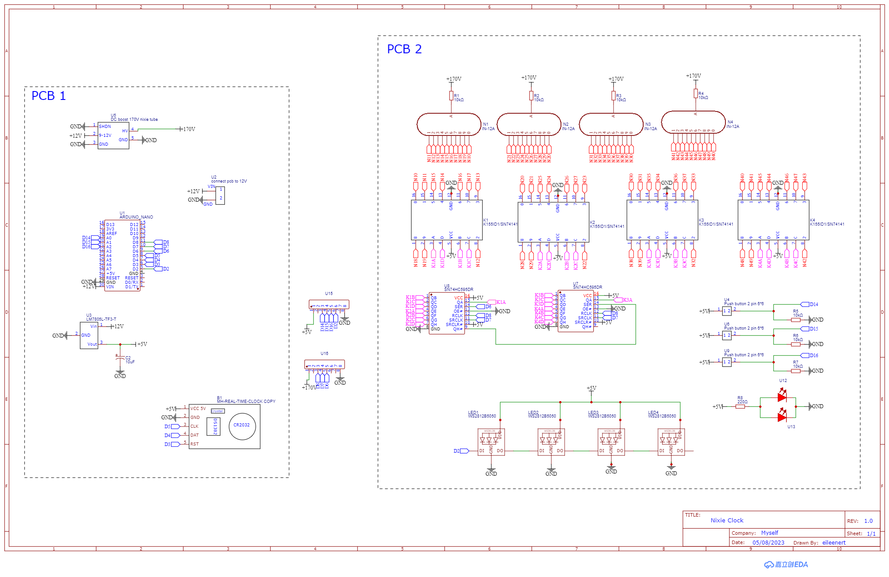
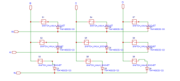
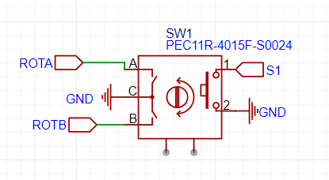

Step 2: Circuit and components
Understanding the Macropad V2's technical choices.
The circuit
The circuit was designed in EasyEDA.

Why these components?
I decided to make a 3 × 3 macropad: it is a good number of buttons, neither too many nor too few. To connect the switches, each button can be assigned a microcontroller pin, or a matrix can be used.
Direct connection
- Simpler circuit and programming.
- Better responsiveness: each button is read directly, without matrix scanning (polling), which reduces latency.
- Simultaneous key detection: avoids the limitations associated with ghosting and key rollover in matrix keyboards.
- Lower CPU usage, since no matrix needs to be scanned.
Matrix and diodes
It is the most common approach. There are two main ways to detect which key is pressed in a keyboard matrix. The first, and most common, is to scan the rows or columns one at a time. A voltage is successively applied to each row (or column), while the system checks which columns (or rows) register a connection. When a key is pressed, it creates a connection between a row and a column, making it possible to identify its exact position. This scan is repeated quickly to continuously update the keyboard state. This method is advantageous because it optimizes energy consumption and reduces the load on the microcontroller by activating only part of the matrix at a time. A second approach consists of applying a voltage to all rows or all columns simultaneously. When a key is pressed, the system quickly scans all columns or rows to detect where the connection occurred. This method can provide faster detection, but it can also consume more power and requires more complex microcontroller management. In general, the first method is preferred for its simplicity and efficiency, while the second can be useful in specific cases requiring extremely fast detection.
Diodes are also used to prevent ghosting, a phenomenon where some keys are not registered when several keys are pressed simultaneously. I chose 1N4148 SMD SOD-123 diodes because they are widely used, fast and reliable.

Switches and hot swaps
Switches can be linear (quiet and smooth), tactile (with tactile feedback) or clicky (with an audible click). I chose Kailh Box White clicky switches. Hot swaps make it easy to change switches without desoldering them. The keycaps must be compatible with the switches.
Additional features
- A rotary encoder to control the volume. Pins A and B of a rotary encoder are the quadrature signal outputs, used to detect rotation and the direction of movement (time-shifted square waves). This shift determines the direction of rotation. If A changes before B, the signal rotates in one direction. If B changes before A, the signal rotates in the opposite direction.
- An I2C OLED display to show text or small images.
- Four RGB LEDs placed underneath the PCB.

Microcontroller
The Arduino Pro Micro, based on the ATmega32U4 (5 V / 16 MHz), is small, is recognized directly as an HID device and can power the macropad. I decided against using female pins, which would have prevented soldering the microcontroller directly to the circuit board, as this would have taken up more space. Finally, to flash the microcontroller, we need to short-circuit the GND and RST pins, and to make this easier, I added a small SMD button.
← Back to Macropad V2